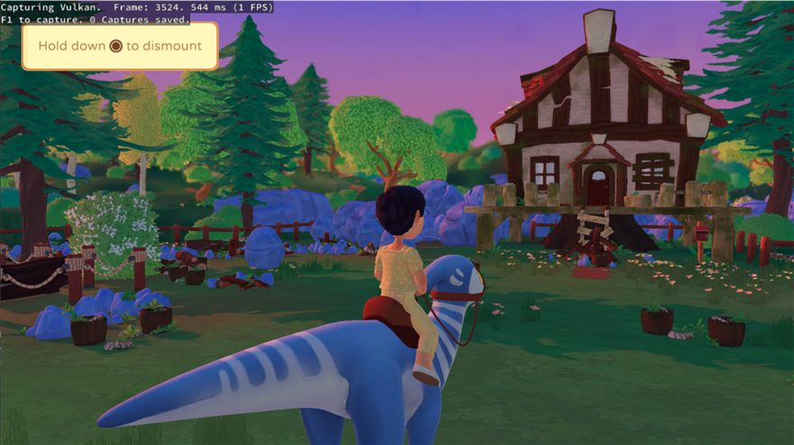

Learning KytyPS5 by doing
Reading 123,000 lines front to back does not work. This is an ordered set of small, complete journeys through the emulator — each one ends with something you can actually do. Every task is concrete and every file reference is real.
Companion to the architecture guide. If a term here is unfamiliar — NID, PM4, sharp, SRT, EXEC mask — that document's glossary defines it.



Debugging playbook
Symptom to first move. This is the table you will actually use once you are past level 3.
| Symptom | Turn on | Look at |
|---|---|---|
| Exits immediately, no window | default logging | The last few log lines. Usually a failed subsystem init, a missing eboot.bin, or an EXIT_NOT_IMPLEMENTED in the loader. The message names the file and condition. |
| Crashes before any rendering | default logging | Search for kyty_exception_handler. The handler prints the faulting module, 64 bytes of code, all registers and a guest stack walk. If the fault address is small (like 0x28) suspect an unpatched fs: access. |
| Boots, then a function does nothing | PRINT_NAME_ENABLE(true) in the suspect module |
The per-call trace. Also grep the log for stubbed NIDs — an import that resolved to the lazy thunk returns 0, which many games read as success. |
| Black screen, no errors | --command-buffer-dump true |
Whether draw packets are arriving at all. No IT_DRAW_* in the dump means the problem is upstream of graphics — the game never got far enough to render. |
| Geometry wrong or missing | --rd then RenderDoc |
The captured draw: vertex buffer contents, the bound pipeline, viewport and scissor. Compare against the register state in the command buffer dump. |
| Wrong colours or garbage pixels | --shader-log-direction File |
The dumped IR for the pixel shader. Also check whether dispatcher fallback used appears — the fallback is correct but exercises different code. |
| Textures flicker or go stale | --readback-linear-images true |
A coherency bug: the CPU wrote memory the GPU has cached, or vice versa. Start at MemoryTracker, not at the texture cache. |
| Vulkan device lost / validation errors | --vulkan-validation true --shader-validation true |
Validation output first. --shader-validation runs every emitted module through spirv-val, which catches malformed SPIR-V before the driver does something unpredictable with it. |
| Runs but very slowly | --profiler-direction Network |
Tracy. Check first whether time goes to shader compilation (a cold cache) or to per-draw work, because the fixes are completely different. |
| Hangs with no CPU use | attach a debugger, dump all threads | A blocked WAIT_REG_MEM in the command processor whose condition never becomes true, or a guest thread waiting on an event queue nothing signals. |
Commands you will type constantly
Configure and build
# from an x64 Native Tools prompt — note: source root is src/, not the repo root
cmake -S src -B _Build/windows -G Ninja -DCMAKE_BUILD_TYPE=Release ^
-DCMAKE_C_COMPILER=clang-cl -DCMAKE_CXX_COMPILER=clang-cl ^
-DCMAKE_PREFIX_PATH="C:/Qt/6.x.x/msvc2022_64"
cmake --build _Build/windows --target kyty_emulator # emulator only, faster
cmake --build _Build/windows --target launcher # + Qt front end
cmake --install _Build/windows --prefix _Build/windows/install
Run
# bare run .\_Build\windows\install\kyty_emulator.exe --game "D:\Games\Example" # the configuration you will use for most debugging kyty_emulator.exe --game "D:\Games\Example" ^ --printf-direction File --printf-output-file _kyty.txt ^ --vulkan-validation true --shader-validation true # graphics investigation kyty_emulator.exe --game "..." --command-buffer-dump true ^ --shader-log-direction File --graphics-debug-dump true
Where output lands
| Path | Written by | Note |
|---|---|---|
_kyty.txt | --printf-direction File | Default is Console, so redirect it to a file before a long session. |
_Shaders/ | --shader-log-direction File | Decoded RDNA 2, CFG and IR per shader. |
_Buffers/ | --command-buffer-dump true | Decoded PM4 listings. |
_Textures/ | --graphics-debug-dump true | Cleared on every start by ClearDebugTextureFolder(). |
_SaveData/, _DownloadData/, _TempData/ | the guest | Per-title, keyed by TITLE_ID. |
src/common/emulatorConfig.h:21 src/main.cpp:40
Build and run a test
cmake --build _Build/windows --target memory_tracker_tests .\_Build\windows\memory_tracker_tests.exe # every test target is EXCLUDE_FROM_ALL, so a normal build skips them: scalar_provenance_tests resource_tracking_tests page_manager_tests memory_tracker_tests resource_mutex_tests image_page_table_tests event_queue_lifetime_tests shader_stage_runtime_tests shader_vertex_metadata_tests
Reading conventions in this codebase
Five things worth internalising before you read much source. They are used consistently, so recognising them saves a lot of time.
| You will see | It means |
|---|---|
EXIT_NOT_IMPLEMENTED(cond)1,034 sites | "If this is true, I did not handle this case." Not an assertion of impossibility — a marker of the frontier. Grepping these is the fastest way to map what the emulator does not yet do. |
EXIT("...")484 sites | An unrecoverable error with a message. Distinguished from the above: this is a real invariant violation, usually a bug rather than a gap. |
KYTY_SYSV_ABI | This function is called by guest code. Its arguments arrive in System V registers. Never call it directly from emulator code without thinking about the ABI. |
PRINT_NAME() | First line of a guest-facing function. Logs the call when the module's thread-local flag is on. Free tracing, already wired up. |
KYTY_CLASS_NO_COPY(T) | Deleted copy constructor and assignment. Ubiquitous on anything owning a Vulkan or OS handle. |
Common::Singleton<T>::Instance() | How cross-cutting services are reached — the runtime linker, the subsystem list, the config. There is no dependency injection here. |
Naming that maps to hardware
HwCtx*/HwSh*/HwUc*— handlers for context, shader and user-config register writes. The three register spaces a PM4 stream can target.CpOp*— a command-processor operation, i.e. a handler for one PM4 opcode.IT_*— PM4 opcodes ("indirect-buffer type").R_*— Sony's sub-selectors carried inIT_NOPpackets.V#T#S#— buffer, image and sampler descriptors. In code, "sharp".Gen5— the AGC graphics API. Appears everywhere inagc.cppandlibGraphicsDriver.cpp.
Whenever you read a pointer, ask: guest address or host address? Whenever you read a function, ask: which thread runs this — the guest thread, the GPU thread, or the main/window thread? Most genuinely confusing emulator bugs are a confusion about one of those two questions, and the codebase does not always spell out the answer.
Built against KytyPS5 v0.2.2; line references will drift as the code moves. Times are rough and assume you are comfortable with C++ but new to emulation. If a level takes twice as long as stated, that is normal — level 5 in particular is a compiler course wearing a disguise.